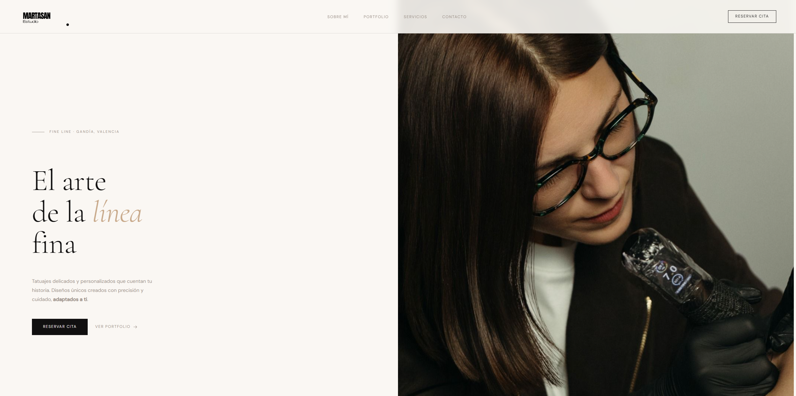

⚡ 99/100 Performance

LIVE SITE
Encargo real · En producción
Marta San Tattoo
Web de presentación para un estudio de tatuaje especializado en fine line, en Gandía. Incluye una sección de "sobre mí", una galería de trabajos realizados, los servicios que ofrece y un formulario de contacto para pedir cita. Desplegada en Vercel.
- Diseño adaptado a móvil, pensado para llegar desde Instagram
- Galería de portfolio con los trabajos del estudio
- Formulario de solicitud de cita con selección de tamaño y zona
⚡ Vercel Edge
📱 100% Mobile Ready
🔒 SSL Securo